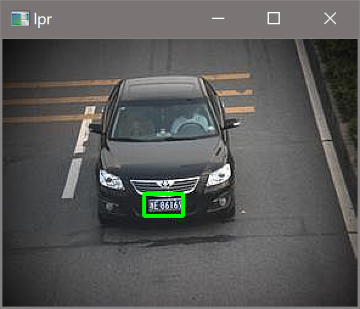

原文连接:https://www.cnblogs.com/fyunaru/p/12083856.html
写在前面
HIT大三上学期视听觉信号处理课程中视觉部分的实验三，经过和学长们实验的对比发现每一级实验要求都不一样，因此这里标明了是2019年秋季学期的视觉实验三。
由于时间紧张，代码没有进行任何优化，实验算法仅供参考。
实验要求
对给定的车牌进行车牌识别
实验代码
代码首先贴在这里，仅供参考
实验代码如下：
import cv2
import numpy as np
def lpr(filename):
img = cv2.imread(filename)
# 预处理，包括灰度处理，高斯滤波平滑处理，Sobel提取边界，图像二值化
# 对于高斯滤波函数的参数设置，第四个参数设为零，表示不计算y方向的梯度，原因是车牌上的数字在竖方向较长，重点在于得到竖方向的边界
# 对于二值化函数的参数设置，第二个参数设为127，是二值化的阈值，是一个经验值
gray_img = cv2.cvtColor(img, cv2.COLOR_RGB2GRAY)
GaussianBlur_img = cv2.GaussianBlur(gray_img, (3, 3), 0)
Sobel_img = cv2.Sobel(GaussianBlur_img, -1, 1, 0, ksize=3)
ret, binary_img = cv2.threshold(Sobel_img, 127, 255, cv2.THRESH_BINARY)
# 形态学运算
kernel = np.ones((5, 15), np.uint8)
# 先闭运算将车牌数字部分连接，再开运算将不是块状的或是较小的部分去掉
close_img = cv2.morphologyEx(binary_img, cv2.MORPH_CLOSE, kernel)
open_img = cv2.morphologyEx(close_img, cv2.MORPH_OPEN, kernel)
# kernel2 = np.ones((10, 10), np.uint8)
# open_img2 = cv2.morphologyEx(open_img, cv2.MORPH_OPEN, kernel2)
# 由于部分图像得到的轮廓边缘不整齐，因此再进行一次膨胀操作
element = cv2.getStructuringElement(cv2.MORPH_RECT, (5, 5))
dilation_img = cv2.dilate(open_img, element, iterations=3)
# 获取轮廓
contours, hierarchy = cv2.findContours(dilation_img, cv2.RETR_EXTERNAL, cv2.CHAIN_APPROX_SIMPLE)
# 测试边框识别结果
# cv2.drawContours(img, contours, -1, (0, 0, 255), 3)
# cv2.imshow("lpr", img)
# cv2.waitKey(0)
# 将轮廓规整为长方形
rectangles = []
for c in contours:
x = []
y = []
for point in c:
y.append(point[0][0])
x.append(point[0][1])
r = [min(y), min(x), max(y), max(x)]
rectangles.append(r)
# 用颜色识别出车牌区域
# 需要注意的是这里设置颜色识别下限low时，可根据识别结果自行调整
dist_r = []
max_mean = 0
for r in rectangles:
block = img[r[1]:r[3], r[0]:r[2]]
hsv = cv2.cvtColor(block, cv2.COLOR_BGR2HSV)
low = np.array([100, 60, 60])
up = np.array([140, 255, 255])
result = cv2.inRange(hsv, low, up)
# 用计算均值的方式找蓝色最多的区块
mean = cv2.mean(result)
if mean[0] > max_mean:
max_mean = mean[0]
dist_r = r
# 画出识别结果，由于之前多做了一次膨胀操作，导致矩形框稍大了一些，因此这里对于框架+3-3可以使框架更贴合车牌
cv2.rectangle(img, (dist_r[0]+3, dist_r[1]), (dist_r[2]-3, dist_r[3]), (0, 255, 0), 2)
cv2.imshow("lpr", img)
cv2.waitKey(0)
# 主程序
for i in range(5):
lpr(str(i+1) + ".jpg")参数调整
上述代码中，所有涉及到参数调整的函数，例如形态学操作，都需边调整边观察当前参数下的运行结果，待本步运行结果较好时，再继续写下一步。
该代码对具体图片要求较高，不同的图片可能无法成功识别车牌，此时可尝试依次调整预处理部分，形态学部分，hsv检测部分函数的参数
实验结果


ps:图五是最难识别的图片，最后是通过调整hsv下限为[100, 60, 60]实现的
知识总结
这一部分总结实验过程中查询的博客，介绍完成本实验所需的知识，并对其记录以便之后复习。
python3 利用opencv 添加中值滤波，均值滤波，高斯滤波，高斯双边滤波
这篇博客参考的是opencv中常用的滤波函数
图像的二值化之python+opencv
这篇博客是opencv中二值化函数的详解
Python下opencv使用笔记（四）（图像的阈值处理）
这篇博客参考的是使用二值化函数时的阈值如何设置
OpenCV_ cv2.imshow()
这篇博客参考的是opencv图片显示的方式
OpenCV-Python教程（6、Sobel算子）
这篇博客参考的是sobel算子函数的使用方法
形态学操作—膨胀与腐蚀（Dilation and Erosion）
OpenCV中的图像的膨胀和腐蚀
这两篇博客参考的是膨胀腐蚀的原理即opencv使用
轮廓检测cv2.findContours()
Python OpenCV findContours()函数与drawContours()函数用法
这两篇博客参考的是opencv边框画法，前者是轮廓检测，后者是画出边框
从 RGB 到 HSV 的转换详细介绍
这篇博客参考的是hsv的原理
实验总结
很简单的一个实验，总时间加起来大致5个小时左右,（其中还包括了一个小时调参数的时间）
简单的原因是opencv真好用，全程调库